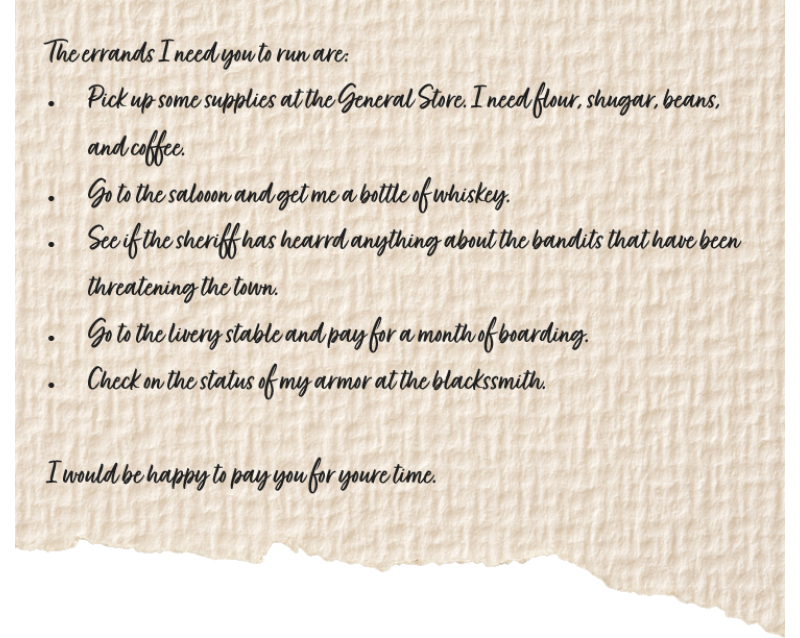

It's been weeks, but you and the crew have had relatively safe travel between Stormvault and Padsted. Apparently breaking out of jail together does wonders for building a friendship. You've convinced them to travel with you, and since they know they'd end up back in prison if they went back to their old lives, they've agreed to stick together. You head to the Inn, The Bronze Boar, easily recognizable by the literal bronze boar's head hanging above the doorway. You inquire about a room and any work in the area. The bartender Harland mentions that he's been so busy lately that he's behind on getting some supplies and would appreciate it if you'd go around and complete his shopping list for him. Also, he'd like you to give the list to Essig when you're done. You find it to be an odd request, but don't see the harm.
